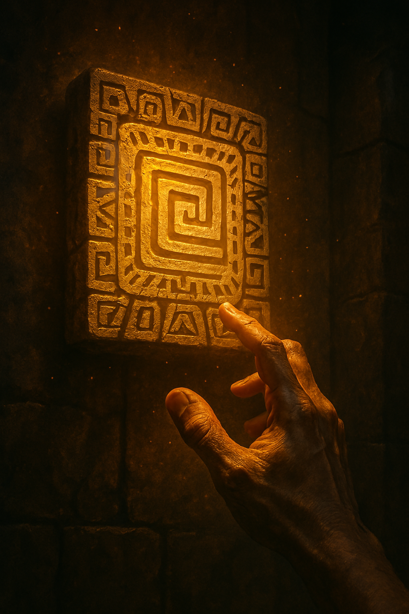

Alas you have gotten past the gruelling challenges. Suddenly the wall behind you shakes, and with a deep rumble, a hidden compartment opens, revealing a glowing relic.
The relic seems to emanate a powerful energy, and as you grab it, you feel its weight in your hand.
The ground shakes violently as the temple continues to collapse, but you've succeeded in obtaining the relic.